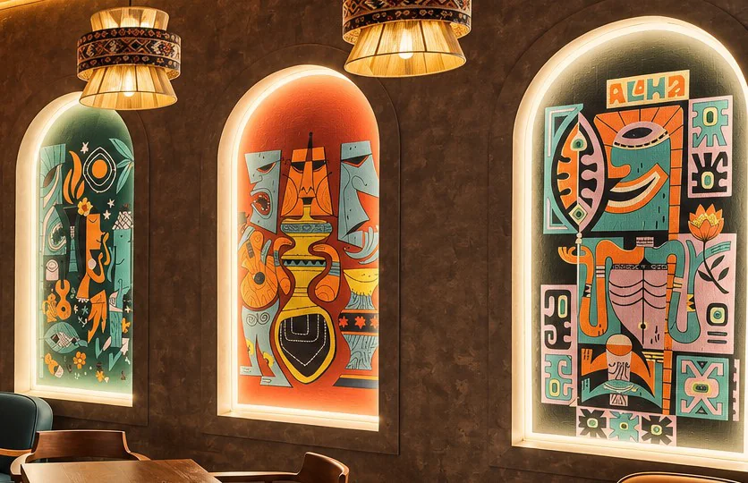

The Art Behind the Arches
Three lit arches on our back wall, a jazz-loving cat from Atlanta, and the style that gave tiki its second life. Meet Derek Yaniger, the artist whose designs our panels are drawn from.
The first thing most people photograph at Swizzle is not a drink. It is the wall. Three arched panels, lit from behind, in teal, tangerine and mustard: a hula girl among the fronds, a grinning tiki mug flanked by two long faces, and a big blocky head under the word ALOHA. They were painted here in Vientiane by a local artist, working from the designs of an American illustrator named Derek Yaniger, and the plaque beside them says so. This post is the longer version of that plaque.
Who is Derek Yaniger?
Derek was born in Little Rock, Arkansas, in 1960 and grew up on his father's jazz records, Rat Fink model-kit boxes and the cartoon art of MAD Magazine. He took a degree in illustration and design at the University of Georgia and went to work in Atlanta advertising agencies and at Turner. Then came comics: a run at Marvel drawing Hellraiser, Transformers and Spider-Man, and after that Cartoon Network, where the flat colour and sharp angles of 1950s animation were the house style.
Somewhere around the turn of the century he stopped drawing other people's characters and started drawing the world he actually liked. That world is tiki bars, beatniks, jazz clubs, rockabilly, burlesque and the cocktail hour, roughly 1955 to 1965, remembered the way it should have looked rather than the way it did. He describes himself simply as a mid-century modern artist. Everyone else describes him as one of the defining artists of the tiki revival.
The style
You know a Yaniger from across a room. Figures are built from wedges and blocks, with heavy outlines and almost no shading. The palette is small and stubborn: teal, orange, cream, mustard, black. Faces are long, eyes are half closed, and everybody, human or carved, looks like they have just heard a very good joke. The lineage runs back to the cartoon modern of the 1950s, the UPA studio cartoons, Jim Flora's record covers, the Disney concept art of Mary Blair, but Derek's version is louder and funnier. A moai holds a martini. A cat wears sunglasses. A tiki mug has a personality.
What makes it more than nostalgia is the draughtsmanship underneath. Years of comics taught him to make a figure read instantly at any size, which is why his art works on a gig poster, a sticker, a shot glass and, as it turns out, a two-metre arch on a wall in Laos.

Where his work turns up
Everywhere the revival gathers. He has drawn the official art for Tiki Oasis, the big annual tiki weekender in California, for the Las Vegas Rockabilly Weekend and for Tales of the Cocktail in New Orleans. He has designed tiki mugs, typefaces and more posters than anyone has counted. His paintings have hung at Outré Gallery in Australia, MondoPop in Rome and galleries in Mexico and Spain, and magazines from Tiki Magazine to Playboy Brazil have run features on him. The commissions list reads like a mid-century fever dream: the artist Shag, Elvira, the Brian Setzer Orchestra, the Pixar director Lee Unkrich.
In 2008 Korero Books collected more than 150 of his paintings and drawings in a monograph called Wildsville: The Art of Derek Yaniger. It is the best single place to see how much ground one man with a small palette can cover.
Why he belongs on our wall
Tiki has had two lives. The first was built by Donn Beach and Trader Vic out of driftwood, rum and theatre. The second began in the late 1990s, when a generation that had grown up with the carved faces in the back of a parents' cupboard decided they were worth taking seriously again. That revival needed a look of its own, something that honoured the originals without pretending the twentieth century had not happened, and Derek Yaniger, along with a handful of others, gave it one.
So when we were planning Swizzle, his colours were already in the room. The Dok Champa orange of the walls, the Mekong teal, the mustard of the lampshades: it is his palette and it is also, by luck or by instinct, a Lao one. Putting three of his designs under lit arches was the obvious thing to do, and crediting him for them is the only decent one.
Find him, follow him, buy a print
If the arches catch your eye tonight, the right response is to own an original. His prints cost about what a good night out does and last a great deal longer.
- derekart.com, the home of everything
- Prints, from Tiki Oasis posters to black-light editions
- Drinkware, mugs and glasses for the home bar
- Originals, when one is available
- Instagram and Facebook for new work as it happens
Derek, if you ever make it to Vientiane, there is a seat under the arches with your name on it.